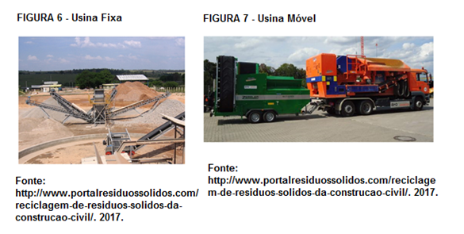

As Usinas de reciclagem de RCC podem ser divididas em usinas fixas e moveis, ou seja, de acordo com a sua mobilidade.
As Usinas Fixas são construídas em um terreno com uma área que varia em função da capacidade de processamento da usina, ou seja, quanto maior a capacidade, maior será a área necessária para se construir. Precisam da preparação de um fundamento onde serão instaladas. Sua instalação até o momento de operação leva em torno de 30 dias. São as versões economicamente mais acessíveis do mercado, contudo as mais limitadas em se tratando de competitividade comercial.
Já uma Usina de Reciclagem Móvel de Resíduos da Construção Civil – URM-RCC é composta basicamente por um caminhão do tipo Roll On Roll Off, que permite carregar, descarregar e bascular diversos modelos de contêineres, plataformas ou outros tipos de carrocerias intercambiáveis, adaptando-se às mais diversas cargas, uma Britadeira Móvel e uma Peneira Rotatória Móvel normalmente atracada como reboque no caminhão. As britadeiras móveis são construídas em um único bloco normalmente com o tamanho variando entre 1 container de acordo com sua capacidade de processamento. Podem ser utilizadas em um empreendimento fixo ou mesmo ser alugada para obras em diferentes locais.
As vantagens deste modelo são muitas, como por exemplo, por causa de sua mobilidade poderá ser levado para regiões onde seu serviço seja útil; diminui os custos de construção de fundamento de base; alta capacidade de processamento; pode ser locada por empresas do setor. Ademais, se aproveitado da maneira correta, pode ser muito lucrativo e versátil.

| CONTATO | ENDEREÇO | SOBRE NÓS | REDES SOCIAIS | ||
|---|---|---|---|---|---|
| Clique aqui. | Av. Comendador Enzo Ferrari, 280 – Swift , Campinas - SP, 13045-770 | Alunos da Universidade Paulista (Unip-Swift) , do Primeiro semestre de Sistemas de Informação.Este site juntamente com o aplicativo faz parte do trabalho de APS (ATIVIDADES PRATICAS SUPERVISIONADAS), relacionados a matéria de DAW (DESENVOLVIMENTO DE AMBIENTE DE WEB ) e PDM (PROGRAMAÇÃO DE DISPOSITIVO MÓVEL). | Youtube | ||
© Copyright 2019 – Construção Sustentável - Todos os direitos reservados | |||||